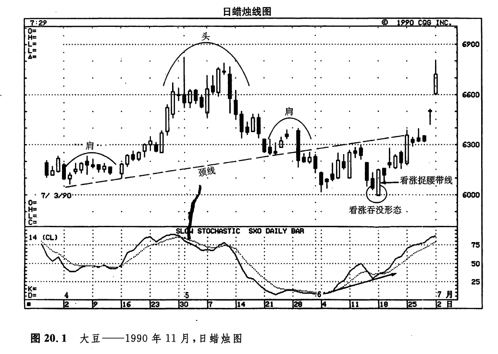
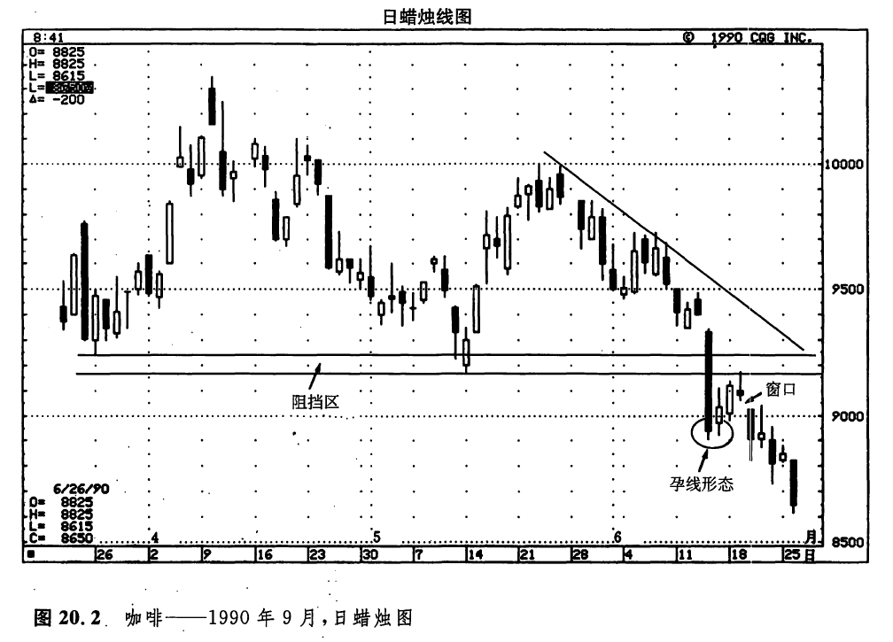
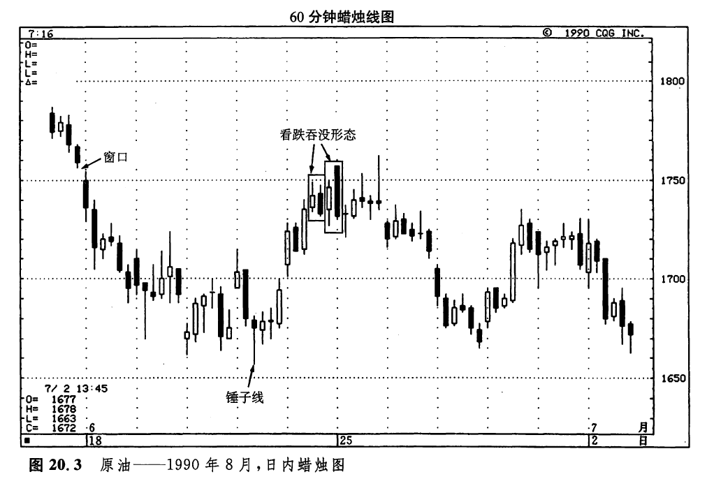
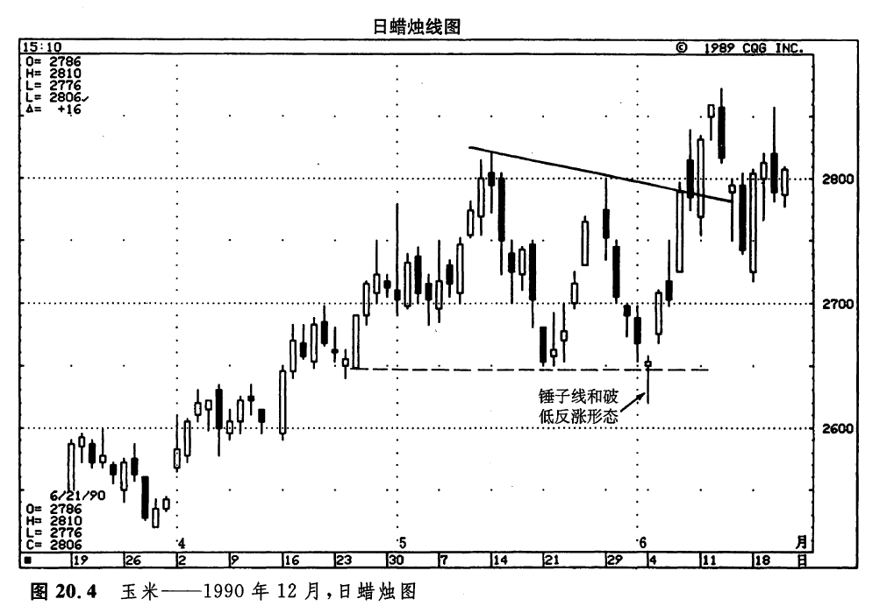
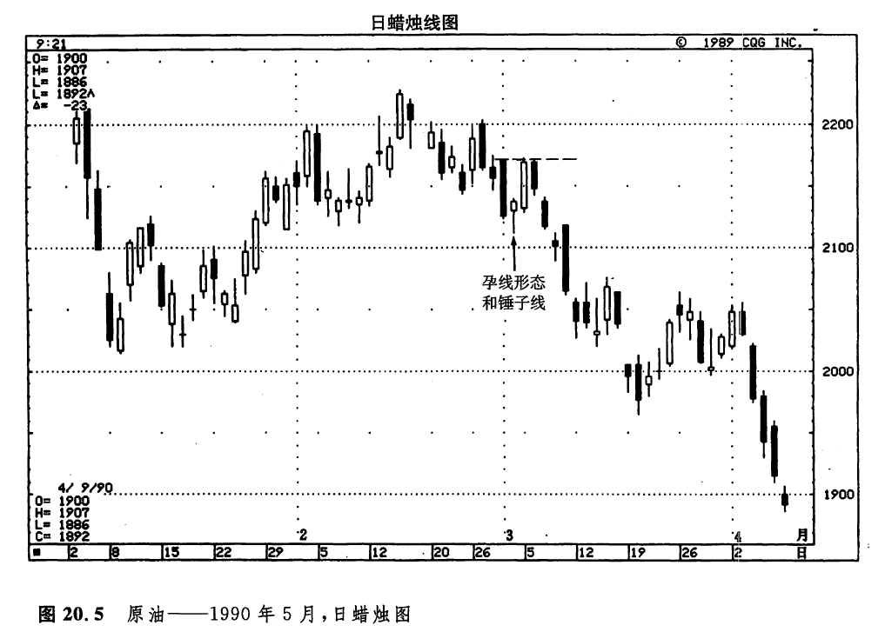

“狡兔三窟”
下面介绍的实例，是我在一个多月的时间中为梅里尔·林奇系统提供的一部分交易建议。在所有这些实例中，均或多或少地涉及到了蜡烛图技术。因为我研究的是期贷市场，所以本章列举的实例以期货市场为取向。另外，我侧重于短期的市场分析，因此，这些实例都是从日内图表和逐日图表中采摘的。每位市场参与者都有自己独特的交易风格。您的交易方式不会等同于我的交易方式。所以在这些实例中，我并不指望您会经历与我一样的思考过程，或者采取与我相同的行动。
本章的目的，不是要为您提供一大套交易规则，其主旨是说明如何将蜡烛图技术融合到自己的交易方法之中。我希望通过这一章的示范，能够起到抛砖引玉的作用，促使您开步前进，走上将蜡烛图技术同自己的市场研究相结合的道路。
如图20.1所示，市场在5月29日向下跌破了一个头肩形形态的颈线。于是，市场趋势转而向下。根据西方技术分析理论，一旦某个头肩形形态的颈线被向下突破了，那么我们预期，首先有一个回向颈线的反扑过程，然后，市场再恢复向下的压力。在6月11日所在的一周，市场便处在向上趋近这条颈线的过程中。6月11日，是一根坚挺的白色蜡烛线。在这一点上，卖出做空的主意并不太有说服力。我需要证据，说明当前的上涨行情已经步入困境。下一天，是一根小的黑色实体，市场凭着这根蜡烛线发出了遇到麻烦的暗示。这就标志着前一天坚挺的白色蜡烛线可能难以为继了。

6月13日，我建议在6.27美元的水平卖出做空。其止损水平设置在颈线上方的6.35美元。我们的价格目标是5.90美元（这是根据当年早些时候形成的一个支撑水平作出的判断）。在这一星期余下的几个交易日中，随着市场的下滑，这笔空头头寸看上去挺不错。但是到了6月18日，市场发出明显的信号，显示当务之急是平回空头头寸。这些信号如下所列：
1.6月18日是一根高高的白色蜡烛线，它向上吞没了前一根黑色实体。于是，这两根蜡烛线组成了一个看涨吞没形态。
2.6月18日的开市价向下跌过了6月初的低点，为当前趋势创出了新低水平。然而，市场不久就重新回到了6月初的低点之上。这样一来，就形成了一个破低反涨形态。过去的低点虽然一度被跌破，但是市场不能维持这样的局面。根据这个破低反涨形态，我预期市场将向上重新尝试当前交易区间的上边界，即大约6.30美元的水平。
3.6月18日的蜡烛线是一根强劲的看涨捉腰带线。
4.当前的新低价位在随机指数曲线上没有得到相应的验证。这就形成了一个正面相互背离信号，表明熊方已经丧失了对市场的控制。
6月18日的价格变化显示，当前市场环境并不适合做空。第二天，我便在6.12美元的水平平回了原来的空头头寸。在上述这一实例中，在开立头寸时我主要依据西方技术分析方法，但也采用了一些蜡烛图指标，并根据它们调整了自己对市场的看法。
如图20.2所示，从5月下旬开始，我们看到了一系列逐步降低的高点，它们均处于图示的向下倾斜的阻挡线下方。这就表明当前的主要趋势是下跌的。0.92美元是一个支撑水平，这个支撑水平的形成一直可以回溯到3月底和5月初。6月14日，当图示的咖啡市场向下跌过了这些低点之后，正是寻撩适当价位卖出做空的时候。6月14日是一根长长的黑色蜡烛线，它显示市场的抛售压力很沉重。但是，市场此时正处于严重超卖状态，不宜马上卖出做空。
有一根小实体出现在这根长长由黑色蜡烛线之后，由此构成了一个孕线形态。这个孕线形态告诉我，之前的下降趋势已经转化为中性行情，所以不可以鲁莽地建立空却非寸。现在，市场既有可能形成一个水平交易区间，也有可能发生上涨行情。结果，咖啡市场形成了一段小规模的上涨行情。这段上涨行情恰巧终止于我们所预期的水平——0.92美元附近。为什么0.92美元的水平如此特别，能够成为阻挡水平呢？请回忆这样一条定理：过去的支撑水平能够转化为新的阻挡水平。3月底和5月初的低点位于0.92美元。这一水平现在转化为阻挡水平。在上述短暂的上涨行情中，一旦市场从0.92美元附近向下折回，我就了解到，熊方依旧把持着市场的控制权。6月20日的价格变化问下打开了一个窗口，这意味着市场将形成另一阶段的下降行情。6月21日，当我看到市场元力向上运动到这个窗口的阻挡区之上后，建议在0.9015美元卖出做空，并把止损水平安排在6月20日的高点处，即0.9175美元，其价格目标在0.8675美元（这是根据同一年早些时候的支撑水平提出来的）。后来，市场便开始回落。

在如图20.3所示的时间，原油市场正处于熊市之中。因此，我正在寻找市场回升的机会卖出做空。6月21日，当图示的锤子线出现后，市场开始了一段上升行情（请注意，我并没有采用这根锤子线来作为买进的信号。为什么呢？因为当前的主要趋势是向下的）。在这根锤子线的数日之后，接连出现了两个看跌吞没形态。在这种情况下，我建议卖出做空。在6月15日和6月18日之间，市场曾经打开了一个小窗口。因为我确信这个窗口将起到阻挡作用，所以把止损水平设置在稍高于这个窗口的水平，即17.65美元。我的价格目标是，市场将重新向下试探前面的锤子线处的低点。后来在6月25日，市场又一次向上试探由上述吞没形态和窗口所形成的阻挡水平，但是很快由此向下反弹。

如图20.4所示，6月4日市场形成了一根锤子线，并且它的收市价成功地维持于在4月底和5月中的低点，即2.65美元的水平之上。因为当日市场本来已经向下刨出了当前趋势的新低水平，但是未能维持这样的战果，所以也构成了一个看涨的破低反涨形态。

虽然这是一根看涨的锤子线，但是我并没有立即建议买进，因为市场仅仅以细微的差距维持在2.65美元的支撑水平之上，所以，我还需要下一天进一步的验证信号。在这根锤子线的次日，市场开市于较高的价位，由此证实了上述信号。于是，我建议在2.68美元的水平买入，止损水平设在比上述支撑水平稍低的2.64美元。价格目标是，市场向上试探图示的向下倾斜的阻挡线，即2.79美元。锤子线之后的这根坚挺的蜡烛线完成了一个启明星形态。
尽管在图20.5所示的实例中我们并未获取利润，但是这是一个很好的例子，说明了蜡烛图如何能够帮助我们识别良好的出、入市点。3月2日是星期五，这一天的价格变化发出了一些买入信号。首先，这是一根锤子线。其次，这根锤子线的小实体处于前一根高高的实体之内，形成了一个孕线形态。这个孕线形态意味着之前较小规模的下降趋势已经告终。最后，这根锤子线的低点已经向下跌破了2月初形成的支撑水平，但是这一新低水平未能维持下去。换句话说，熊方曾经力图向下突破，但是未能如愿以偿。这就构成了一个入市买进的良机。

3月5日，星期一，我建议在21.38美元买入。其价格目标是一个非常近期的价格水平，即市场向上重新试探2月底的高点，22美元的水平。既然价格目标如此接近，那么止损指令的水平也应当成比例地位于很接近的水平。我把它安排在锤子线的低点稍下方，为21.10美元。在3月5日和6日，市场上升到了2月28日和3月1日的高点，21.75美元附近。市场未能向上超越这个近期的阻挡区。当我看到这一失败过程后，便将止损指令的水平向上调整到盈亏平衡点上。在3月7日市场的回拍过程中，这个头寸被止损平仓。一旦价格向下推进到了这根锤子线的低点之下，市场的下跌进程便势如劈竹。
下一篇：结语
上一篇：第十九章 利用蜡烛图进行保值交易